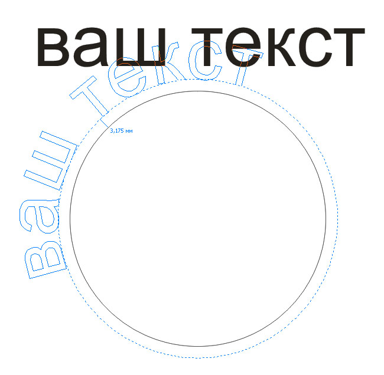
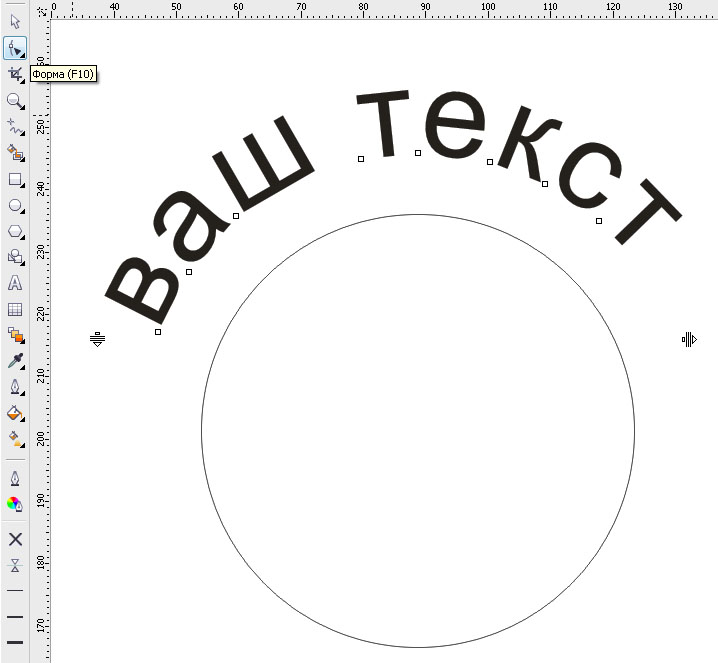

Текст вдоль кривой. Практический совет
sergey / 14.05.2011, 16:23/00:41
Форум:
Это, скорее, не урок, а практический совет.
Расчитан на новичков!
Бывалым — 

После постановки на путь возможно редактирование.
Достаточно взять текст и поместить его в желаемом положении.

Можно подредактировать текст в режиме Форма

Нужен текст, который пойдёт в другом направлении.
Для этого необходимо отразить его по горизонтали, а затем по вертикали
и применить к пути
Задать направления текста можно и после применения к пути
После того, как желаемый результат достигнут можно отделить путь и удалить,
чтоб случайно не сдвинуть текст, или задать ему нулевой абрис.
Описание внутри
файл создан в 16.0.0.707
сюрпризы начались сразу же - если группу из 5 объектов разгруппировать и скопировать тут же на листе - меняется порядок объектов. Корректировка текста приводит к результатам описанным ТС. При создании файла заново в версии 16.1.0.843 - эффекты те же - интерактивное редактирование визуально выгибает текст, а в выделении не видно букв.
Пересохранение файла в версии ниже 16 - с любым ответом на вопрос - что делать с фишкой 16 версии - Опентайп текстом? - снимает все вопросы - в Корел 15 - все чудно - и видно и редактируется. Тот же файл в 16 версии программы начинает чудить. Вывод - Это "бага".
Судя по файлу, он явно из "весёлого" прошлого :)
Пересоздал текст заново и нет ни каких багов.
Но файл я разработчикам отправлю, пусть подумают.
я тоже пересоздавал и на оригинальном пути ( кривой ) и на подобной. Как втыкаешь два текста на одну кривую - какой-то один начинает "дурить". Замена шрифтов OTF на Т1 или ttf - результата не дала.
намек на прошлое - это название цвета контура текста GOLD?
Страницы